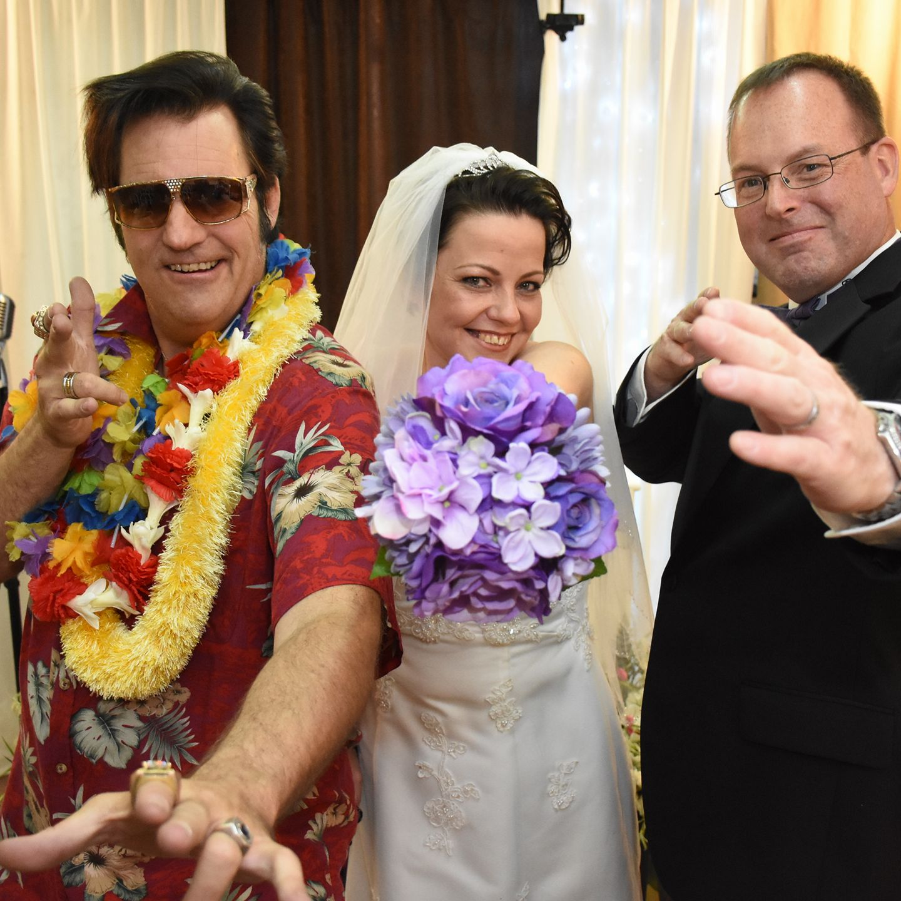

Here’s a little peek behind the scenes: I’m a fiber artist and writer with a creative streak that shows up in
just about
everything I do. When I’m not working with yarn, fabric, words, or ideas, I’m probably spending time with my
ferrets,
who keep life equal parts chaotic, hilarious, and adorable.
I have a deep love for all things pop culture, especially the wonderfully weird and wonderfully nerdy. I’m a
huge fan of **Doctor Who** and FireFLy.
I also have a soft spot for true crime podcasts and wonderfully nerdy love stories. I met my husband at a
**Doctor Who
Happy Hour**, which feels perfectly on-brand, and we got married at an **anime convention** because ordinary
just isn’t
really our style. To top it all off, we later had our vows renewed by **Elvis**—because honestly, why not
make the story
even better?